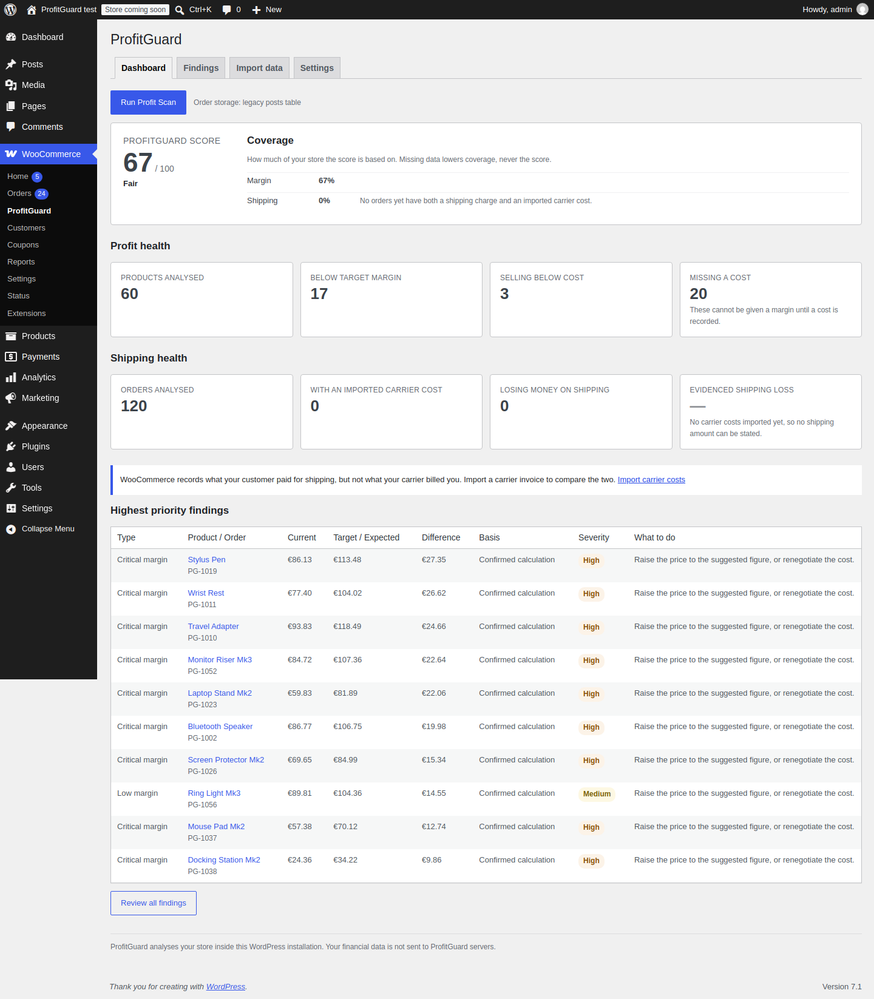
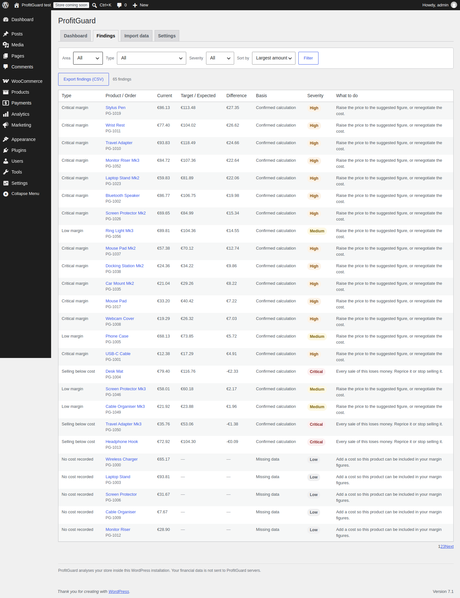
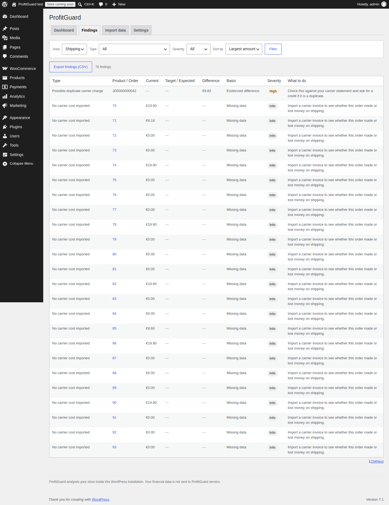
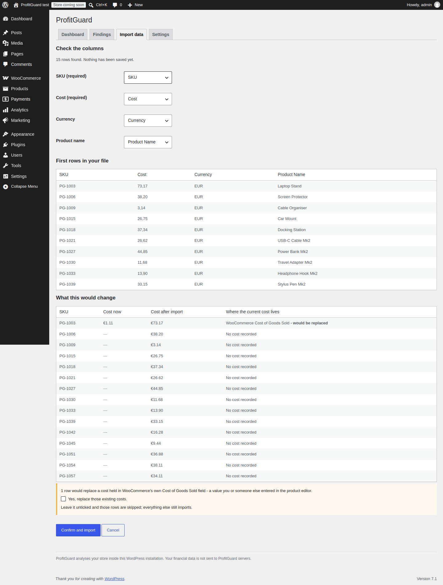
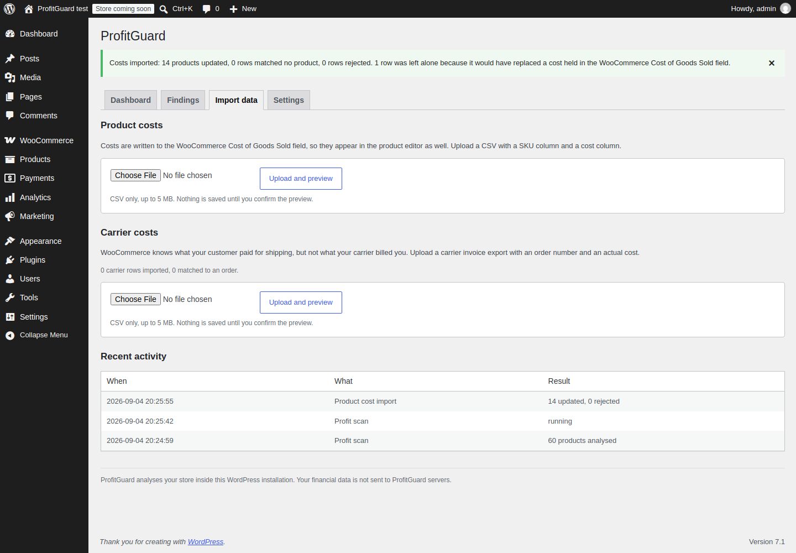
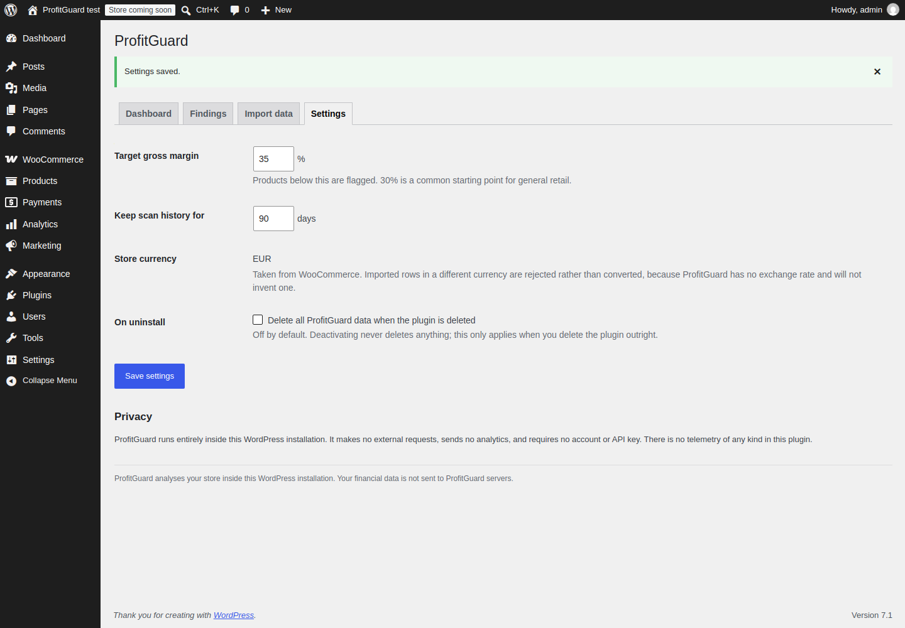

Margin findings
Low margin, critical margin, selling below cost, missing cost, sale-price margin risk, and supplier cost increases.
WooCommerce margin and shipping profit
WooCommerce tells you what you sold. It does not tell you what you kept. ProfitGuard reads the cost data your store already holds, measures every product against the margin you were aiming for, and compares what your carrier billed against what the customer actually paid — then ranks what to fix by the amount of money at stake.
Free and staying free · GPLv2 or later · no account, no API key, no telemetry · runs entirely inside your own WordPress
For stores that know revenue but not margin
Since WooCommerce 10.3, Cost of Goods Sold is part of WooCommerce itself — though it is switched off by default under WooCommerce → Settings → Advanced → Features. ProfitGuard does not add a competing cost field. It reads whichever cost data you already have, and spends its effort on the layer above: which products are quietly losing you money, how much, and which one to fix first.
What it checks
WooCommerce's own Cost of Goods Sold field when the feature is enabled, costs stored by other cost-of-goods plugins (read only), or costs you import from CSV. Variation costs resolve the way WooCommerce resolves them — inherited from the parent, replacing it, or added to it — so the figures reconcile with WooCommerce's own analytics.
Set a target gross margin. Every product and variation with a price and a cost gets its current margin, markup, profit per unit, and the exact price that would reach the target. Products with no cost are counted and reported, not quietly dropped.
WooCommerce records what the customer paid for shipping. It cannot know what the carrier billed you weeks later, with fuel surcharges and weight corrections that did not exist at checkout. Import that invoice as CSV and ProfitGuard compares the two per order, and flags duplicate charges and rows that matched no order.
Every finding carries the amount of money at stake and is sorted by it, so the first row is the one worth your afternoon. Export the whole list as CSV.
All of it, permanently free
Low margin, critical margin, selling below cost, missing cost, sale-price margin risk, and supplier cost increases.
Per order: what the customer paid, what the carrier billed, and the difference — plus duplicate carrier charges and unmatched rows.
Every amount is an integer number of minor units. No floating-point currency is ever stored, compared, or summed.
The import preview shows the current and new cost for every row, and refuses to replace a cost held in WooCommerce's own field unless you tick the box.
High-Performance Order Storage compatible, background scanning through Action Scheduler, nothing running on your shop front end.
No external HTTP requests, no analytics, no telemetry. Uploaded CSVs are parsed and discarded, never written to your uploads directory.
Real interface screenshots
Every image below is produced by the browser test that runs on each release: a fresh WordPress 7.1 with WooCommerce 11.1.0, a seeded store, and a real Profit Scan. The build fails if they cannot be produced.






Monetisation, stated plainly
Everything described on this page is in the free plugin, permanently, with no upsell inside it. A separate paid add-on may follow later — but only after this one has been listed for ninety days, has real installs, and has had enough support conversations to know what is actually worth charging for. Until all three are true there is nothing to sell, and saying so now is more useful than a "Pro" badge on a feature that already works.
FAQ
Yes, and it prefers it. With the feature enabled ProfitGuard reads the native cost, and an import writes through WooCommerce's own API — so there is one cost field in the product editor rather than a second private one beside it. With the feature disabled, ProfitGuard does not write into it; it keeps its own cost data and tells you the setting exists.
Because a cost has to come from somewhere and nothing has recorded one yet. WooCommerce's cost field is off by default, and enabling it does not fill it in. Turn it on, or import costs from a CSV with a SKU column and a cost column.
Only partly. WooCommerce knows what the customer paid and has no way of knowing what the carrier later charged. Import one carrier invoice and ProfitGuard does the rest. Until then it reports "no carrier cost imported" rather than estimating.
It writes a cost only when you confirm an import, and it never changes a price, a product, or an order. The browser test re-reads every product price and order total after an import and fails the build if any of them moved.
The test suite runs on PHP 7.4, 8.1, 8.2, 8.3 and 8.4 on every release, and passes on all five.
Open an issue on GitHub with reproducible steps and a synthetic or redacted CSV. Please do not send real supplier or customer data.